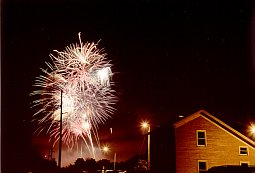

Steve's Firework Photos
These photos were taken with a Canon Rebel 2000 mounted on a Stitz T-6 tripod and using the remote shutter control. Exposure was 6 to 30 seconds (bulb) at f/11 (Kodak's recommended aperture setting) on ISO 200 Polaroid High Definition film through a Canon 28-80 II (or a Canon 75-300) with a Tiffen UV Protector filter.
The Canon Rebel 2000 actually does real well when used in AV (Aperture Priority) mode when shooting a night scene with fireworks in the background. However, when just shooting fireworks, I prefer to use the bulb setting so that I can control when the picture is finished.
I changed my aperture from f/11 to f/16 on ISO 200 Polaroid High Definition film, and found that the colors came through a little better.
Camera Aperture Settings for Fireworks
ISO Film Speed aperture f/stop ISO 25 f/4 ISO 50/64 f/5.6 or f/8 ISO 100 f/8 or f/11 ISO 200 f/11 or f/16 ISO 400 f/16 ISO 800 f/22 ISO 1000 f/27 ISO 3200 f/32 These photos were developed at Wal-Mart using their standard development service on 4" x 6" glossy paper. I scanned them using an HP ScanJet 4C for screen resulution (typically 75 dpi).
2000 - Fireworks photos shot in Conyers, Georgia